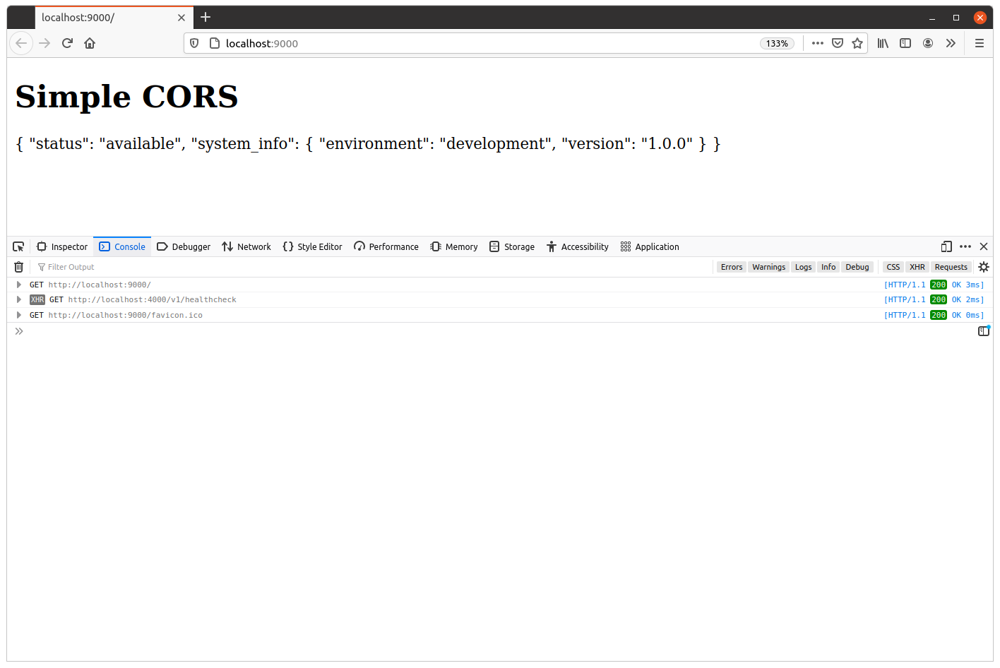
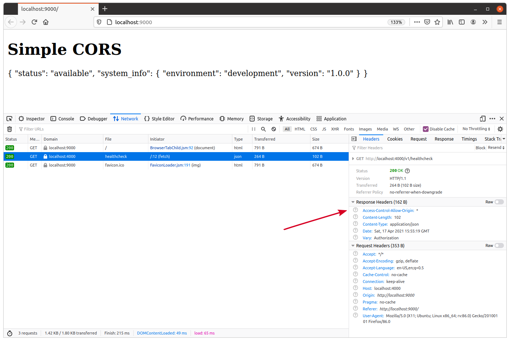
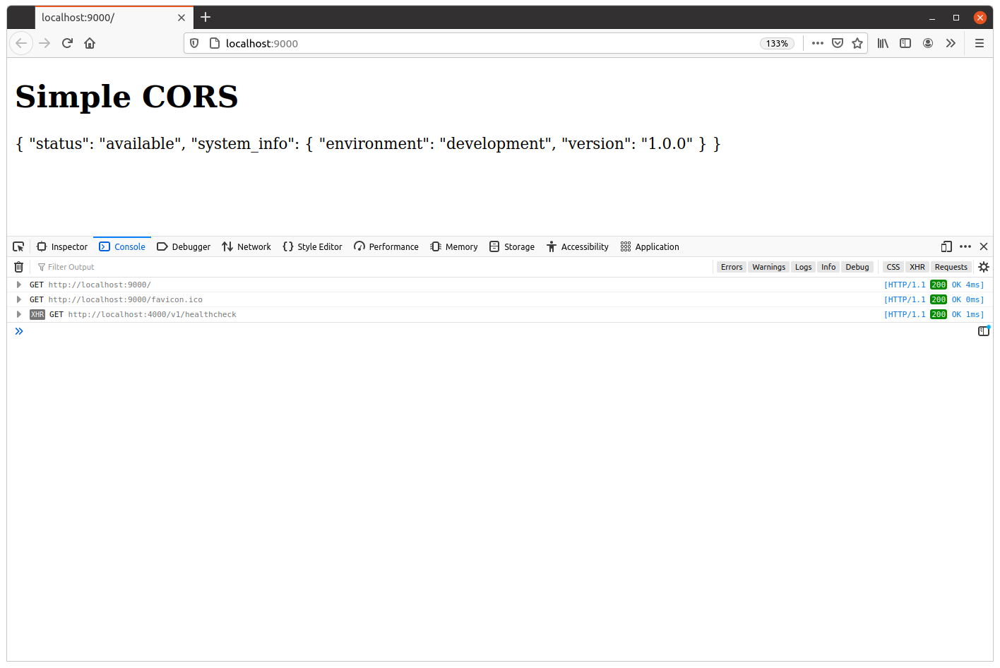
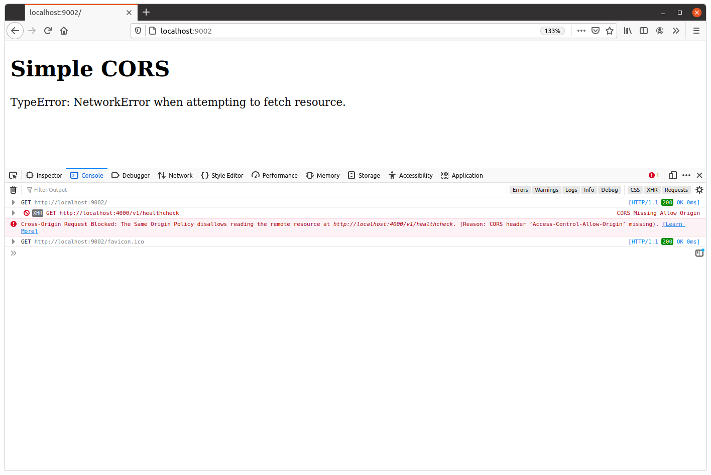

درخواستهای ساده CORS
بیایید اکنون تغییراتی در API خود ایجاد کنیم تا سیاست same-origin را تسهیل کنیم، به طوری که JavaScript بتواند پاسخهای endpointهای API ما را بخواند.
برای شروع، سادهترین راه برای دستیابی به این هدف، تنظیم هدر زیر در تمام پاسخهای API ما است:
Access-Control-Allow-Origin: *
هدر پاسخ Access-Control-Allow-Origin برای این استفاده میشود که به مرورگر نشان دهد اشتراکگذاری پاسخ با یک origin دیگر مشکلی ندارد. در این حالت، مقدار هدر کاراکتر wildcard * است، که به این معنی است که اشتراکگذاری پاسخ با هر origin دیگری مجاز است.
بیایید یک تابع middleware کوچک enableCORS() در برنامه API خود ایجاد کنیم که این هدر را تنظیم میکند:
package main ... func (app *application) enableCORS(next http.Handler) http.Handler { return http.HandlerFunc(func(w http.ResponseWriter, r *http.Request) { w.Header().Set("Access-Control-Allow-Origin", "*") next.ServeHTTP(w, r) }) }
و سپس فایل cmd/api/routes.go خود را بهروزرسانی کنید تا این middleware در تمام مسیرهای برنامه استفاده شود. به این صورت:
package main ... func (app *application) routes() http.Handler { router := httprouter.New() router.NotFound = http.HandlerFunc(app.notFoundResponse) router.MethodNotAllowed = http.HandlerFunc(app.methodNotAllowedResponse) router.HandlerFunc(http.MethodGet, "/v1/healthcheck", app.healthcheckHandler) router.HandlerFunc(http.MethodGet, "/v1/movies", app.requirePermission("movies:read", app.listMoviesHandler)) router.HandlerFunc(http.MethodPost, "/v1/movies", app.requirePermission("movies:write", app.createMovieHandler)) router.HandlerFunc(http.MethodGet, "/v1/movies/:id", app.requirePermission("movies:read", app.showMovieHandler)) router.HandlerFunc(http.MethodPatch, "/v1/movies/:id", app.requirePermission("movies:write", app.updateMovieHandler)) router.HandlerFunc(http.MethodDelete, "/v1/movies/:id", app.requirePermission("movies:write", app.deleteMovieHandler)) router.HandlerFunc(http.MethodPost, "/v1/users", app.registerUserHandler) router.HandlerFunc(http.MethodPut, "/v1/users/activated", app.activateUserHandler) router.HandlerFunc(http.MethodPost, "/v1/tokens/authentication", app.createAuthenticationTokenHandler) // اضافه کردن middleware enableCORS(). return app.recoverPanic(app.enableCORS(app.rateLimit(app.authenticate(router)))) }
مهم است که اینجا اشاره کنیم که middleware enableCORS() عمداً در ابتدای زنجیره middleware قرار داده شده است.
اگر آن را بعد از rate limiter خود قرار دهیم، به عنوان مثال، هر درخواست cross-origin که از حد نرخ فراتر رود هدر Access-Control-Allow-Origin را نخواهد داشت. این بدان معناست که توسط مرورگر وب مشتری به دلیل سیاست same-origin مسدود خواهند شد، به جای اینکه مشتری پاسخ 429 Too Many Requests را مانند آنچه باید دریافت کند.
خوب، بیایید آن را امتحان کنیم.
برنامه API را مجدداً راهاندازی کنید و سپس دوباره http://localhost:9000 را در مرورگر خود بازدید کنید. این بار درخواست cross-origin باید با موفقیت تکمیل شود و باید JSON از healthcheck handler ما را در صفحه وب مشاهده کنید. به این صورت:

همچنین توصیه میکنم نگاهی سریع به هدرهای درخواست و پاسخ درخواست JavaScript fetch() بیندازید. باید ببینید که هدر Access-Control-Allow-Origin: * روی پاسخ تنظیم شده است، مشابه این:

محدود کردن originها
استفاده از wildcard برای مجاز کردن درخواستهای cross-origin، مانند آنچه در کد بالا انجام میدهیم، در شرایط خاصی میتواند مفید باشد (مانند زمانی که یک API کاملاً عمومی بدون بررسیهای کنترل دسترسی دارید). اما اغلب اوقات احتمالاً میخواهید CORS را به مجموعه کوچکتری از originهای مورد اعتماد محدود کنید.
برای انجام این کار، باید بهصورت صریح originهای مورد اعتماد را در هدر Access-Control-Allow-Origin به جای استفاده از wildcard درج کنید. به عنوان مثال، اگر فقط میخواهید CORS را از origin https://www.example.com مجاز کنید، میتوانید هدر زیر را در پاسخهای خود ارسال کنید:
Access-Control-Allow-Origin: https://www.example.com
اگر فقط یک origin ثابت دارید که میخواهید درخواستها از آن مجاز باشند، انجام این کار بسیار ساده است — کافی است middleware enableCORS() خود را بهروزرسانی کنید تا مقدار origin لازم را بهصورت hardcoded تنظیم کند.
اما اگر نیاز به پشتیبانی از چندین origin مورد اعتماد دارید، یا میخواهید مقدار در زمان اجرا پیکربندی شود، اوضاع کمی پیچیدهتر میشود.
یکی از مشکلات این است که — در عمل — فقط میتوانید دقیقاً یک origin را در هدر Access-Control-Allow-Origin مشخص کنید. نمیتوانید لیستی از مقادیر origin متعدد، جدا شده با فاصله یا کاما مانند آنچه انتظار دارید، درج کنید.
برای دور زدن این محدودیت، باید middleware enableCORS() خود را بهروزرسانی کنید تا بررسی کند آیا مقدار هدر Origin با یکی از originهای مورد اعتماد شما مطابقت دارد یا خیر. اگر مطابقت داشت، میتوانید آن مقدار را در هدر پاسخ Access-Control-Allow-Origin بازتاب دهید (یا echо کنید).
پشتیبانی از originهای پویای متعدد
بیایید API خود را بهروزرسانی کنیم تا درخواستهای cross-origin به لیستی از originهای مورد اعتماد، قابل پیکربندی در زمان اجرا، محدود شوند.
اولین کاری که انجام میدهیم اضافه کردن یک پرچم خط فرمان جدید -cors-trusted-origins به برنامه API خود است، که میتوانیم از آن برای مشخص کردن لیست originهای مورد اعتماد در زمان اجرا استفاده کنیم. این را به گونهای تنظیم میکنیم که originها باید با یک کاراکتر فاصله از هم جدا شوند — به این صورت:
$ go run ./cmd/api -cors-trusted-origins="https://www.example.com https://staging.example.com"
برای پردازش این پرچم خط فرمان، میتوانیم توابع flags.Func() و strings.Fields() را ترکیب کنیم تا مقادیر origin را به یک slice از نوع []string تقسیم کنیم که آماده استفاده باشد.
اگر دنبال میکنید، فایل cmd/api/main.go خود را باز کنید و کد زیر را اضافه کنید:
package main import ( "context" "database/sql" "flag" "log/slog" "os" "strings" // import جدید "sync" "time" "greenlight.alexedwards.net/internal/data" "greenlight.alexedwards.net/internal/mailer" _ "github.com/lib/pq" ) const version = "1.0.0" type config struct { port int env string db struct { dsn string maxOpenConns int maxIdleConns int maxIdleTime time.Duration } limiter struct { enabled bool rps float64 burst int } smtp struct { host string port int username string password string sender string } // اضافه کردن struct cors و فیلد trustedOrigins با نوع []string. cors struct { trustedOrigins []string } } ... func main() { var cfg config flag.IntVar(&cfg.port, "port", 4000, "پورت سرور API") flag.StringVar(&cfg.env, "env", "development", "محیط (development|staging|production)") flag.StringVar(&cfg.db.dsn, "db-dsn", os.Getenv("GREENLIGHT_DB_DSN"), "DSN پستگرس") flag.IntVar(&cfg.db.maxOpenConns, "db-max-open-conns", 25, "حداکثر اتصالات باز پستگرس") flag.IntVar(&cfg.db.maxIdleConns, "db-max-idle-conns", 25, "حداکثر اتصالات بیکار پستگرس") flag.DurationVar(&cfg.db.maxIdleTime, "db-max-idle-time", 15*time.Minute, "حداکثر زمان بیکاری اتصال پستگرس") flag.BoolVar(&cfg.limiter.enabled, "limiter-enabled", true, "فعالسازی rate limiter") flag.Float64Var(&cfg.limiter.rps, "limiter-rps", 2, "حداکثر درخواست در ثانیه rate limiter") flag.IntVar(&cfg.limiter.burst, "limiter-burst", 4, "حداکثر burst rate limiter") flag.StringVar(&cfg.smtp.host, "smtp-host", "sandbox.smtp.mailtrap.io", "هاست SMTP") flag.IntVar(&cfg.smtp.port, "smtp-port", 25, "پورت SMTP") flag.StringVar(&cfg.smtp.username, "smtp-username", "a7420fc0883489", "نام کاربری SMTP") flag.StringVar(&cfg.smtp.password, "smtp-password", "e75ffd0a3aa5ec", "رمز عبور SMTP") flag.StringVar(&cfg.smtp.sender, "smtp-sender", "Greenlight <no-reply@greenlight.alexedwards.net>", "فرستنده SMTP") // استفاده از تابع flag.Func() برای پردازش پرچم خط فرمان -cors-trusted-origins. // در اینجا از تابع strings.Fields() استفاده میکنیم تا مقدار پرچم را بر اساس // کاراکترهای فاصله به یک slice تقسیم کنیم و آن را به struct پیکربندی اختصاص دهیم. // مهم این است که اگر پرچم -cors-trusted-origins وجود نداشته باشد، رشته خالی // داشته باشد، یا فقط شامل فاصله باشد، strings.Fields() یک slice خالی []string برمیگرداند. flag.Func("cors-trusted-origins", "Originهای مورد اعتماد CORS (جدا شده با فاصله)", func(val string) error { cfg.cors.trustedOrigins = strings.Fields(val) return nil }) flag.Parse() ... } ...
پس از اتمام کار، مرحله بعدی بهروزرسانی middleware enableCORS() ما است. بهطور خاص، میخواهیم middleware بررسی کند که آیا مقدار هدر Origin درخواست یک تطابق دقیق و حساس به بزرگی و کوچکی حروف با یکی از originهای مورد اعتماد ما دارد یا خیر. اگر تطابقی وجود داشت، باید هدر پاسخ Access-Control-Allow-Origin را تنظیم کنیم که مقدار هدر Origin درخواست را بازتاب (یا echو) میدهد.
در غیر این صورت، باید اجازه دهیم درخواست بهصورت عادی ادامه یابد بدون تنظیم هدر پاسخ Access-Control-Allow-Origin. به نوبه خود، این بدان معناست که هر پاسخ cross-origin توسط مرورگر وب مسدود خواهد شد، درست مانند ابتدا.
یک عارضه جانبی این است که پاسخ بسته به originای که درخواست از آن میآید متفاوت خواهد بود. بهطور خاص، مقدار هدر Access-Control-Allow-Origin ممکن است در پاسخ متفاوت باشد، یا حتی ممکن است اصلاً شامل نشده باشد.
بنابراین به دلیل این موضوع باید مطمئن شویم که همیشه هدر پاسخ Vary: Origin را تنظیم کنیم تا به هر کشی اطلاع دهیم که پاسخ ممکن است متفاوت باشد. این واقعاً مهم است و میتواند علت باگهای ظریف مانند این باشد اگر فراموش کنید این کار را انجام دهید. به عنوان یک قاعده کلی:
اگر کد شما بر اساس محتوای یک هدر درخواست تصمیم میگیرد چه چیزی برگرداند، باید نام آن هدر را در هدر پاسخ Vary خود درج کنید — حتی اگر درخواست شامل آن هدر نبوده باشد.
خوب، بیایید middleware enableCORS() خود را مطابق با منطق بالا بهروزرسانی کنیم، به این صورت:
package main ... func (app *application) enableCORS(next http.Handler) http.Handler { return http.HandlerFunc(func(w http.ResponseWriter, r *http.Request) { // اضافه کردن هدر "Vary: Origin". w.Header().Add("Vary", "Origin") // دریافت مقدار هدر Origin از درخواست. origin := r.Header.Get("Origin") // فقط اگر هدر Origin در درخواست وجود داشت اجرا کنید. if origin != "" { // حلقه روی لیست originهای مورد اعتماد، بررسی کنید آیا origin درخواست // دقیقاً با یکی از آنها مطابقت دارد یا خیر. اگر origin مورد اعتمادی وجود نداشته باشد، // حلقه تکرار نخواهد شد. for i := range app.config.cors.trustedOrigins { if origin == app.config.cors.trustedOrigins[i] { // اگر تطابقی وجود داشت، هدر پاسخ "Access-Control-Allow-Origin" // را با مقدار origin درخواست تنظیم کنید و از حلقه خارج شوید. w.Header().Set("Access-Control-Allow-Origin", origin) break } } } // فراخوانی handler بعدی در زنجیره. next.ServeHTTP(w, r) }) }
و با تکمیل این تغییرات، اکنون آماده هستیم که دوباره آن را امتحان کنیم.
API خود را مجدداً راهاندازی کنید و http://localhost:9000 و http://localhost:9001 را به عنوان originهای مورد اعتماد وارد کنید، به این صورت:
$ go run ./cmd/api -cors-trusted-origins="http://localhost:9000 http://localhost:9001" time=2023-09-10T10:59:13.722+02:00 level=INFO msg="database connection pool established" time=2023-09-10T10:59:13.722+02:00 level=INFO msg="starting server" addr=:4000 env=development
و وقتی http://localhost:9000 را در مرورگر خود رفرش میکنید، باید ببینید که درخواست cross-origin همچنان با موفقیت کار میکند.

در صورت تمایل، میتوانید برنامه cmd/examples/cors/simple را با :9001 به عنوان آدرس سرور اجرا کنید و باید ببینید که درخواست cross-origin از آنجا نیز کار میکند.
در مقابل، برنامه cmd/examples/cors/simple را با آدرس :9002 اجرا کنید.
$ go run ./cmd/examples/cors/simple --addr=":9002" 2021/04/17 18:24:22 starting server on :9002
این به صفحه وب یک origin از http://localhost:9002 میدهد — که یکی از originهای مورد اعتماد ما نیست — بنابراین وقتی http://localhost:9002 را در مرورگر خود بازدید میکنید، باید ببینید که درخواست cross-origin مسدود شده است. به این صورت:

اطلاعات تکمیلی
تطابقهای نسبی origin
اگر تعداد زیادی origin مورد اعتماد دارید که میخواهید پشتیبانی کنید، ممکن است وسوسه شوید تطابق نسبی روی origin را بررسی کنید تا ببینید آیا با یک مقدار خاص 'شروع میشود' یا 'تمام میشود'، یا با یک عبارت بازاریط مطابقت دارد. اگر این کار را انجام میدهید، باید مراقب باشید از تطابقهای ناخواسته جلوگیری کنید.
به عنوان یک مثال ساده، اگر http://example.com و http://www.example.com originهای مورد اعتماد شما هستند، اولین فکر شما ممکن است بررسی این باشد که هدر Origin درخواست با example.com تمام میشود. این ایده بدی خواهد بود، زیرا یک مهاجم میتواند نام دامنه attackerexample.com را ثبت کند و هر درخواستی از آن origin از بررسی شما عبور میکند.
این فقط یک مثال ساده است — و پستهای وبلاگی زیر برخی از آسیبپذیریهای دیگری را که میتوانند هنگام استفاده از بررسیهای تطابق نسبی یا عبارت بازاریط به وجود آیند، بحث میکنند:
به طور کلی، بهتر است هدر Origin درخواست را با یک لیست ایمنی صریح از originهای کامل مورد اعتماد بررسی کنید، مانند آنچه در این فصل انجام دادهایم.
origin خالی
مهم است که هرگز مقدار "null" را به عنوان یک origin مورد اعتماد در لیست ایمنی خود درج نکنید. دلیل آن این است که هدر Origin: null در درخواست توسط یک مهاجم از طریق ارسال درخواست از یک iframe sandbox شده قابل جعل است.
احراز هویت و CORS
اگر endpoint API شما به اعتبارنامهها (کوکیها یا احراز هویت اساسی HTTP) نیاز دارد، باید یک هدر Access-Control-Allow-Credentials: true نیز در پاسخهای خود تنظیم کنید. اگر این هدر را تنظیم نکنید، مرورگر وب از خواندن پاسخهای cross-origin با اعتبارنامهها توسط JavaScript جلوگیری میکند.
مهم این است که هرگز نباید از هدر wildcard Access-Control-Allow-Origin: * همراه با Access-Control-Allow-Credentials: true استفاده کنید، زیرا این به هر وبسایتی اجازه میدهد درخواست cross-origin معتبر به API شما ارسال کند.
همچنین، مهم است که اگر میخواهید اعتبارنامهها با یک درخواست cross-origin ارسال شوند، باید این را بهصورت صریح در JavaScript خود مشخص کنید. به عنوان مثال، با fetch() باید مقدار credentials درخواست را روی 'include' تنظیم کنید. به این صورت:
fetch("https://api.example.com", {credentials: 'include'}).then( ... );
یا اگر از XMLHTTPRequest استفاده میکنید، باید ویژگی withCredentials را روی true تنظیم کنید. به عنوان مثال:
var xhr = new XMLHttpRequest(); xhr.open('GET', 'https://api.example.com'); xhr.withCredentials = true; xhr.send(null);